Jefes y enemigos únicos
Los jefes guardan el final de cada mazmorra o dominan un bioma; los únicos son criaturas con nombre propio que sólo aparecen cuando el bioma, la hora, el clima y la altura encajan.
Jefes de mazmorra (11)
 Capitán Esquelético TorvaldCapitán de la CriptaNivel 8 · Las Catacumbas del Roble Caído
Capitán Esquelético TorvaldCapitán de la CriptaNivel 8 · Las Catacumbas del Roble Caído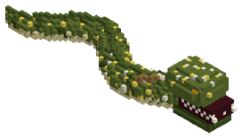
Escila la Morena de las BodegasMorena Gigante de las BodegasNivel 11 · La Gruta de los Naufragios Hundidos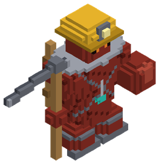
Gólem Supervisor de HematitaColoso de Hematita de la MinaNivel 32 · Minas Olvidadas de Hematita El Nigromante de Azufre Mor'KathSeñor de las Galerías de AzufreNivel 42 · La Cripta de la Ciénaga Olvidada
El Nigromante de Azufre Mor'KathSeñor de las Galerías de AzufreNivel 42 · La Cripta de la Ciénaga Olvidada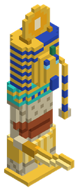
Faraón Inmortal Akhen'SunFaraón InmortalNivel 75 · La Pirámide Sepultada de Khepri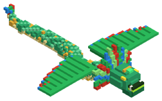
Kukulcán el Devorador de JadeSerpiente Emplumada de JadeNivel 95 · El Ziggurat Sagrado de la Serpiente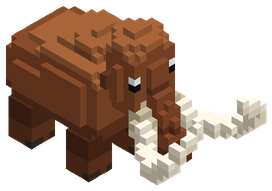
Hrimfaxi el Mamut de Hielo FósilGuardián de las Bóvedas GlaciaresNivel 110 · El Calabozo Glacial del Permafrost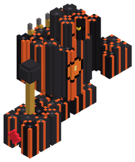
Coloso de Basalto VulcanusColoso de BasaltoNivel 170 · La Forja Primordial de Basalto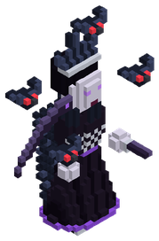
Morrigan la Castellana de la BastillaCastellana de la BastillaNivel 210 · La Bastilla de las Sombras del Ocaso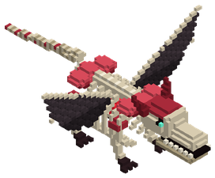
Vorgrath el Dracolich de AdamantioDracolich de AdamantioNivel 320 · La Necrópolis Dracónica de Adamantio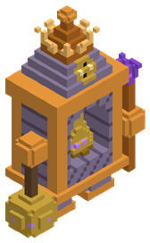
Carillón el Guardián de las CampanasGuardián de las CampanasNivel 370 · El Laberinto Resonante de AmatistaEnemigos únicos (39)
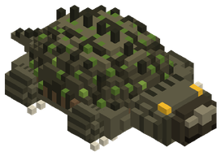
Quelonia del FangoTortuga Aligátor PrimordialNivel 7 · Río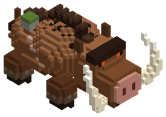
Cerdaloth el GlotónJabalí Titánico AlfaNivel 8 · Llanura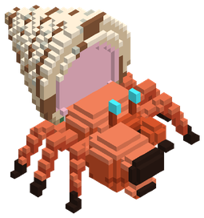
Karkinos el AcorazadoCangrejo Ermitaño GiganteNivel 9 · Playa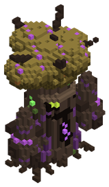
Silvano SombríoTreant Corrupto del RobleNivel 10 · Bosque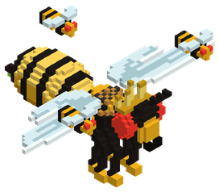
Vespis RegiaReina Avispa ColosalNivel 11 · Pradera Floral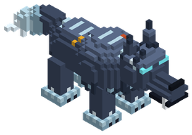
Lupus UmbralisLobo Fantasmal de la TurberaNivel 12 · Arboleda de Otoño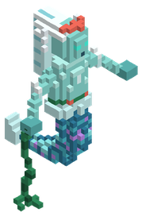
Ondina del NaufragioEspíritu de Espuma ArrecifalNivel 25 · Océano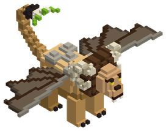
Manticora del PeñascoQuimera Menor del DesfiladeroNivel 28 · Sabana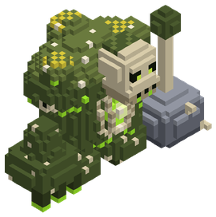
Bégimo de la PodredumbreGólem de Fango Tóxico y CadáveresNivel 32 · Pantano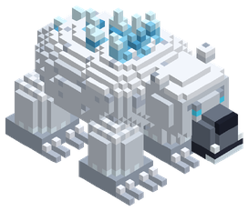
UrsoblastoOso Glacial de PlataNivel 35 · Taiga de Pinos, Tierras nevadas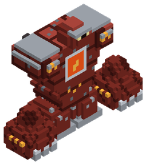
Gólem de HematitaColoso de Hierro RojoNivel 40 · Montaña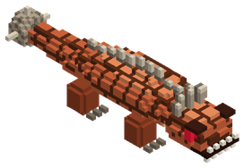
Basilisco de TerracotaReptil Pétreo de Ojos CarmesíNivel 42 · Cañón de Arcilla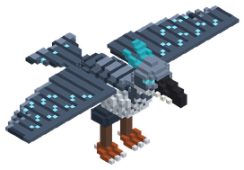
Ziz de los VendavalesAve del Trueno PrimitivaNivel 60 · Estepa Ventosa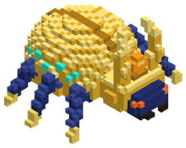
Khepri el Devorador de SolEscarabajo Titán del DesiertoNivel 65 · Desierto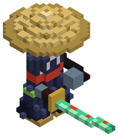
Ronin Sombrío JinEspadachín Fantasma del BambúNivel 70 · Bosque de Bambú Ancestral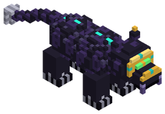
Tezcatl el Jaguar de ObsidianaFelino Sagrado del Espejo HumeanteNivel 75 · Selva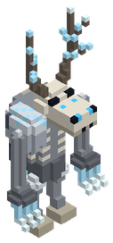
Wendigo de las VentiscasEspectro del Hambre GlacialNivel 80 · Tierras nevadas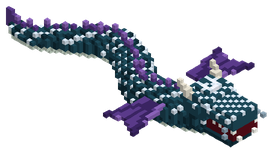
Bakunawa la Serpiente LunarSierpe Devoradora de LunasNivel 88 · Selva de Manglares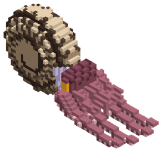
Nautiloth el Amonites ColosalCefalópodo Abisal de Concha EspiralNivel 95 · Océano Profundo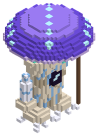
Mycelion el Devorador de MentesColoso Fúngico IluminadoNivel 135 · Bosque de Hongos Gigantes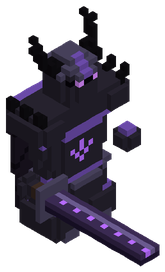
Nox el Señor del OcasoCaballero Negro de la Espada FantasmaNivel 150 · Bosque Umbrío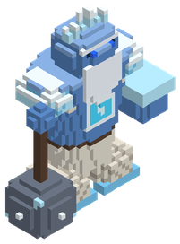
Ymir el Jötunn de EscarchaGigante de Hielo MilenarioNivel 160 · Glaciares de Hielo Azul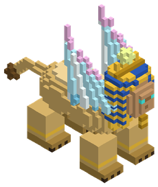
Esfinge de los EspejismosGuardiana Arcano-BestialNivel 175 · Oasis Místico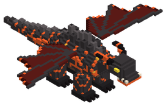
Ignis el Dragón de BasaltoSierpe de Lava de Escamas ÍgneasNivel 190 · Picos Volcánicos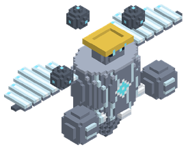
Nimbaroth el Coloso de AerolitaGólem de Islas FlotantesNivel 210 · Cumbres Nubosas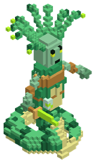
Gorgona del Vitriolo EsmeraldaMonstruo Ácido AlfaNivel 250 · Ciénaga Tóxica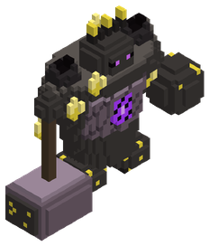
Typhon el Coloso de SulfuritaTitán de Fuego MuertoNivel 280 · Páramo de Ceniza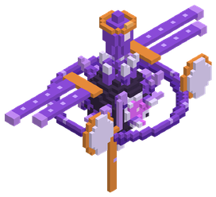
Oráculo de Amatista ResonanteGólem Sónico CuánticoNivel 295 · Bosque de Espigas de Cristal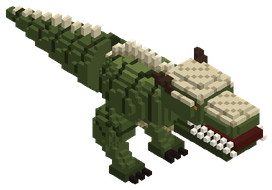
Rex Dracónico PrimordialTirano Sauroide Escamado de FósilNivel 310 · Selva Primordial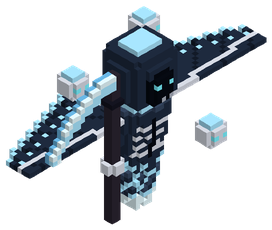
El Segador de Escarcha EstigiaEspectro Glacial del InframundoNivel 340 · Yermo Helado Estigio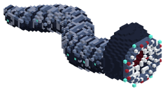
Abzu el Devorador de CorrientesGusano Marino TitánicoNivel 360 · Fosa Abisal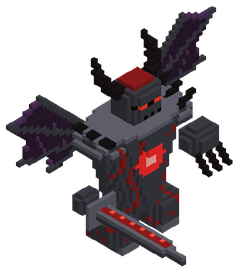
Malakor el Señor de Sangre de HierroAvatar de la CorrupciónNivel 375 · Páramo de la Corrupción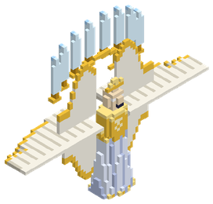
Serafín del FirmamentoGuardián de Eterio CósmicoNivel 410 · Bosque Celestial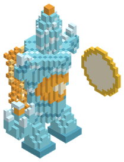
Sol'Zul el Espejo ÍgneoEntidad de Silicio y FuegoNivel 420 · Desierto de Vidrio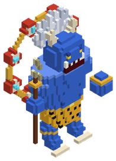
Raijin el Tamborilero de la TormentaOni del Rayo CelesteNivel 430 · Cumbres de la Tormenta Eterna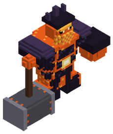
Surtr el Forjador del NúcleoTitán de Magma PrimigenioNivel 440 · Núcleo Ígneo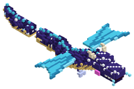
Vritra la Sierpe de GravitónSierpe de GravitónNivel 450 · Archipiélago Flotante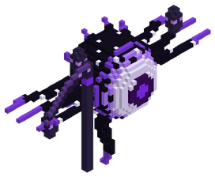
Nihil el Engendro del VórticeAnomalía de Materia del VacíoNivel 460 · Grieta del Vacío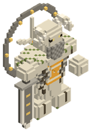
Cronos el Titán OlvidadoColoso de Marfil PetrificadoNivel 470 · Valle de los TitanesOtros jefes (27)
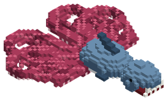
Lusca, el Tiburón-Pulpo de las FosasNivel 1 · Fosa Abisal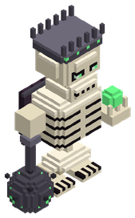
Titán de Hueso PrimigenioNivel 1 · Valle de los TitanesEl Heraldo del Borde del MundoNivel 1 · El Borde del MundoDragón de Obsidiana MilenarioNivel 1 · Núcleo ÍgneoHidra Tóxica de Siete CabezasNivel 1 · Ciénaga TóxicaEl Capataz Kobold GriknashCapataz KoboldNivel 10 · Capitán Fantasma Van Der MeerCapitán FantasmaNivel 10 · Excavadora de Vapor AbandonadaMáquina de Vapor Fuera de ControlNivel 36 · La Matriarca Gorgona de CoralMatriarca Gorgona de CoralNivel 38 · Gólem Titán de Magnetita y RocaGólem Titán de MagnetitaNivel 85 · Rey Tritón el Tirano de las MareasTirano de las MareasNivel 88 · El Forjador Mecánico de MithrilForjador Mecánico de MithrilNivel 180 · Cthulhu Menor de las SombrasSeñor de las Sombras SumergidasNivel 190 · Kharra la Gran Sacerdotisa de la Sangre de HierroGran Sacerdotisa de la Sangre de HierroNivel 320 · El Leviatán Ciego del AbismoLeviatán Ciego del AbismoNivel 340 · Poseidón de Oricalco (El Coloso Sumergido)Coloso SumergidoNivel 420 · El Rey Enano de Hierro AutómataRey Enano de Hierro AutómataNivel 420 · Zephyros el Titán de las AlturasTitán de las AlturasNivel 430 · Karybdis la Reina del MaelstromReina del MaelstromNivel 450 · Ouroboros el Devorador del MantoDevorador del MantoNivel 450 · Thor'Kael el Soberano del RelámpagoSoberano del RelámpagoNivel 460 · Ankhor el Corazón del MantoCorazón del MantoNivel 480 · El Behemoth Abisal de Magma y VacíoBehemoth de Magma y VacíoNivel 480 · Aethelgard el Dragón Cósmico del ÉterDragón Cósmico del ÉterNivel 485 · El Demiurgo del OrigenLa Sombra del CreadorNivel 500 · El Gólem del Origen Tectónico (Guardián de la Piedra Alfa)Guardián de la Piedra AlfaNivel 500 · El Kraken del Génesis (La Mente del Océano Primordial)Mente del Océano PrimordialNivel 500 ·